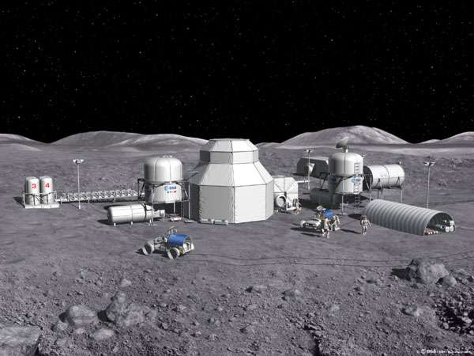
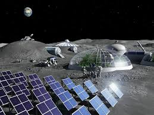
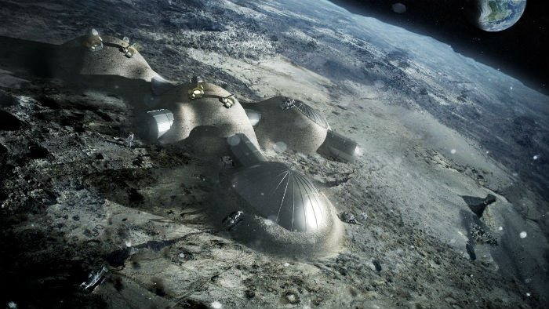
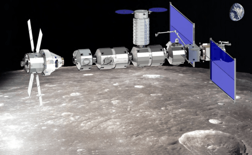

During the Artemis program, NASA will land the first woman and first person of color on the Moon, using innovative technologies to explore more of the lunar surface than ever before.

We will collaborate with our commercial and international partners and establish sustainable exploration for the first time. Then, we will use what we learn on and around the Moon to take the next giant leap – sending astronauts to Mars.

It will make use of a SpaceX Starship on a private spaceflight flying a single circumlunar trajectory around the Moon.

The project objective is to have six to eight normal people travel with Maezawa for free around the Moon on a six-day tour.